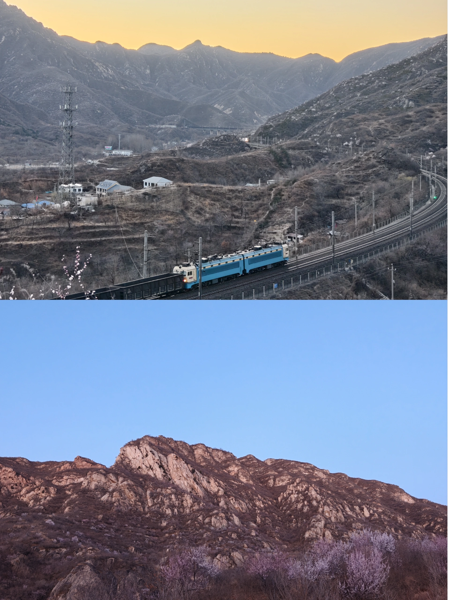

怀柔书画山小环线 + 桃花 / 追火车
春季周末 · 轻徒步和景观记忆点结合的松弛一日线
北京·怀柔
桃花追火车
6.0h
47km
5.7km / 310m / 2.6h
L4 可执行
五道口出发


看图理解这条线

行程卡
| 字段 | 内容 |
|---|---|
| 区域 | 北京·怀柔 |
| 主题 | 桃花追火车 |
| 总时长 | 6.0h |
| 预估自驾 | 47km |
| 徒步参数 | 5.7km / 310m / 2.6h |
| 强度 | 轻度 |
| 适合 | 带娃 / 想轻松走走 / 想要照片和记忆点 |
| 一句话结论 | 路线本身不累，桃花和火车机位让它特别适合春天的松弛感周末。 |
路线摘要
路线本身不累，桃花和火车机位让它特别适合春天的松弛感周末。
🏞️ 目的地介绍
🌸 书画山适合被理解成一条“轻徒步景观线”，而不是纯刷体能的山。六只脚轨迹页显示它大约 5.7km、累计爬升 310m，难度 easy，起终点也足够接近，很适合家庭或想松弛一点的人群。真正加分的是它的春季气质：桃花、山线转折和铁路视角放在一起，容易形成很强的季节记忆。
✨ 活动介绍
🚂 这条线的“休闲内容”不是去一个特定商家，而是路线自带的赏花和追火车氛围。你可以直接把书画山赏花追火车、怀柔书画山桃花当作内容证据。下山后若还想补一段轻休闲，再用点评搜怀柔高分餐厅或咖啡做收尾即可。
🍽️ 点评补充说明
这条线当前仍然是“景观型主线”，没有像大黑山 / 潭柘寺那样已经锁死一家商户做锚点，所以本页先不硬塞一个可能跑偏的餐厅。方法上更合适的是：把徒步和景观点先固定，再在返程或下山片区用点评补一家当天状态最好的高分餐厅 / 咖啡。这样不会让路线被单个商家绑死，也更符合这条线“轻松看花看火车”的气质。
推荐行程安排
| 序号 | 活动 | 时长 | 备注 |
|---|---|---|---|
| 1 | 五道口出发，自驾去书画山起点片区 🚗 | 1.5h | 建议留一点机动给拍照和找机位 |
| 2 | 书画山小环线 5.7km / 310m 🌿 | 2.6h | 主打轻徒步 + 山花 + 火车视角 |
| 3 | 赏桃花 / 找追火车机位 📷 | 0.8h | 这是当天最有记忆点的休闲段 |
| 4 | 下山后轻用餐 / 咖啡 / 村落散步 | 1.1h | 保持松弛，不要再加第二个重活动 |
补证入口已直接放在对应介绍段落里：徒步看六只脚，内容氛围看小红书，临出发校验商家再看点评 / 携程 / Bing。